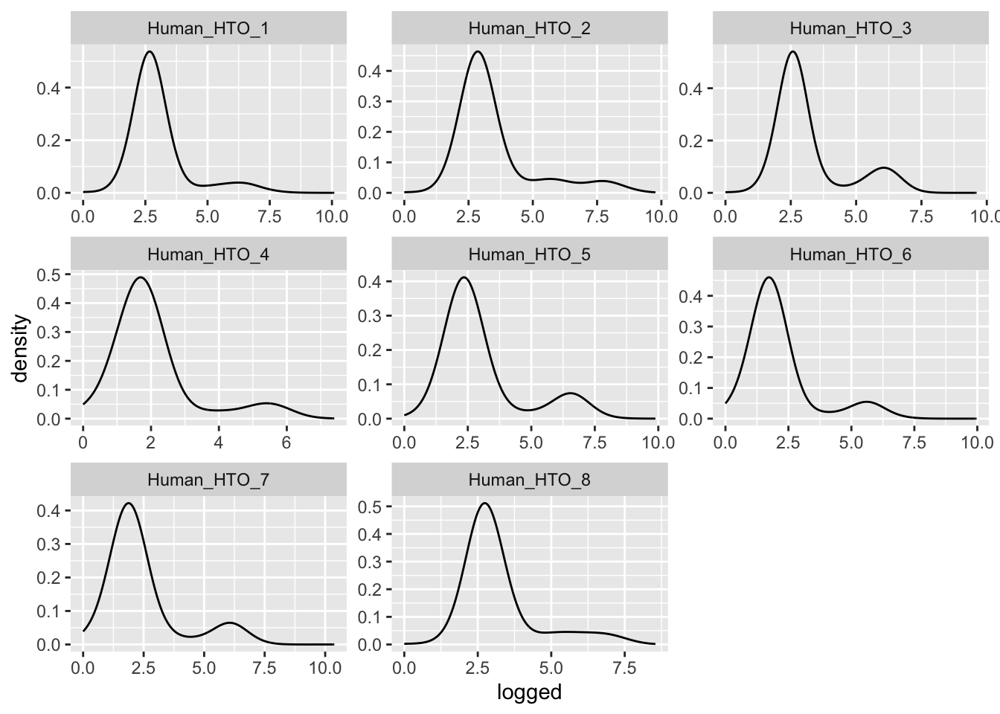
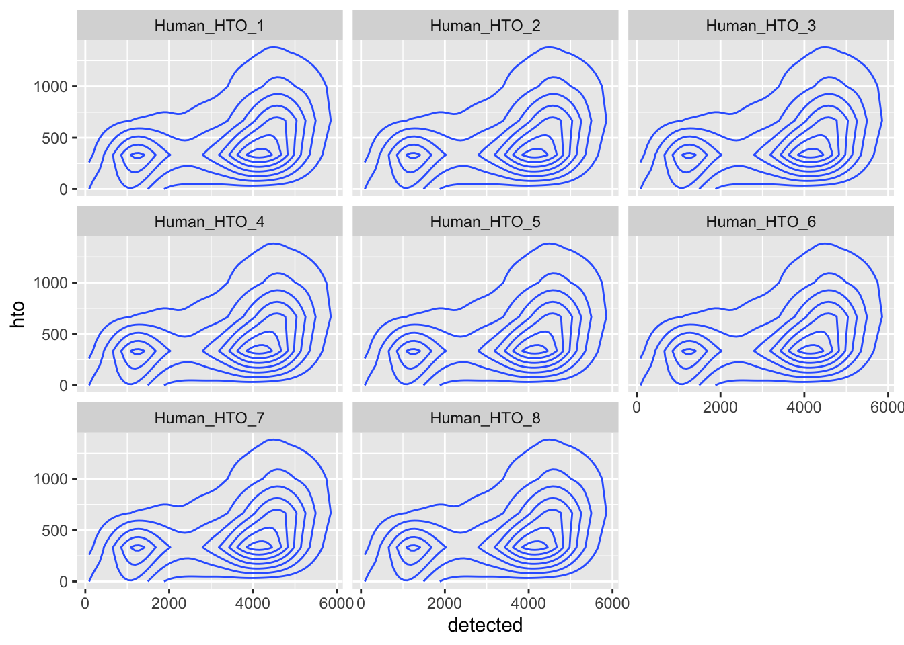
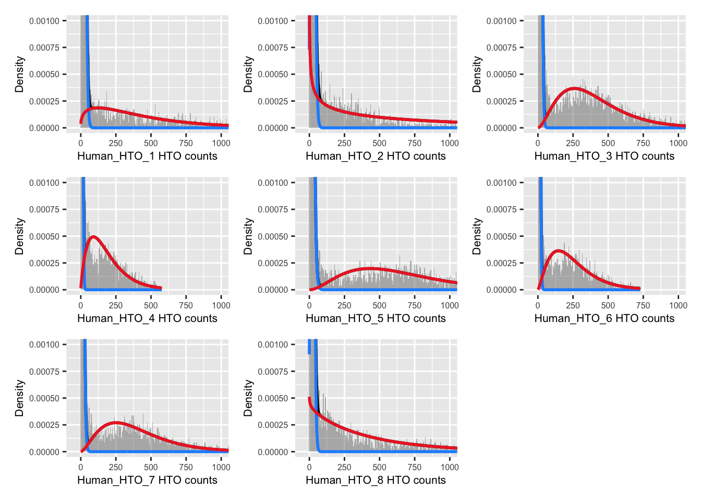
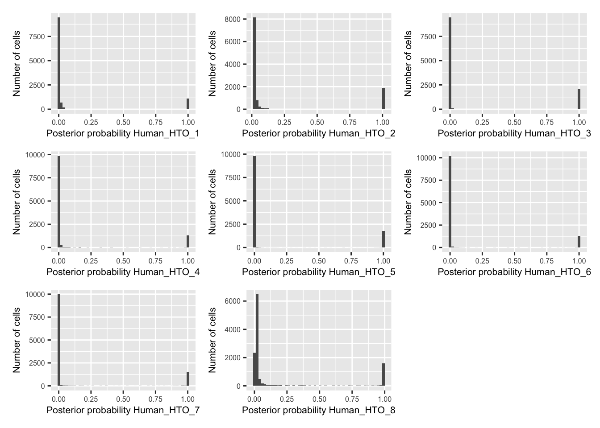
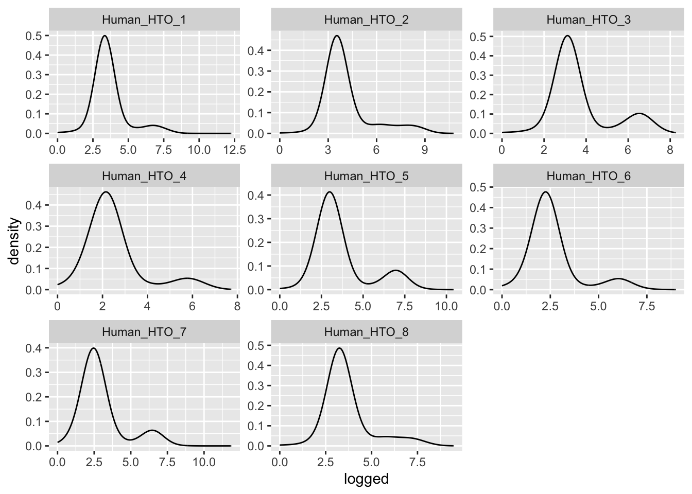
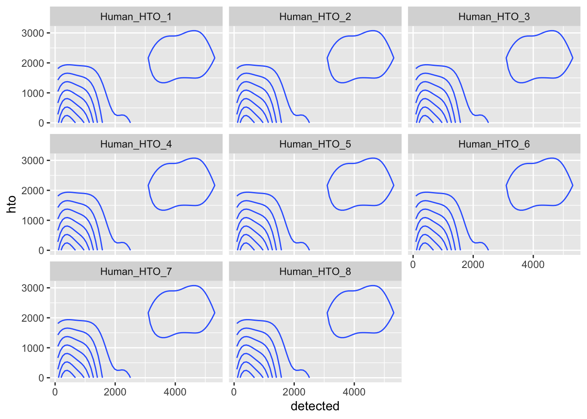
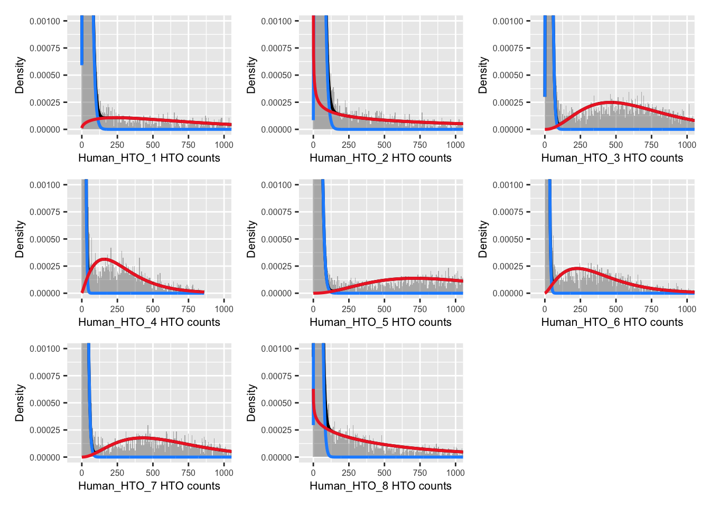
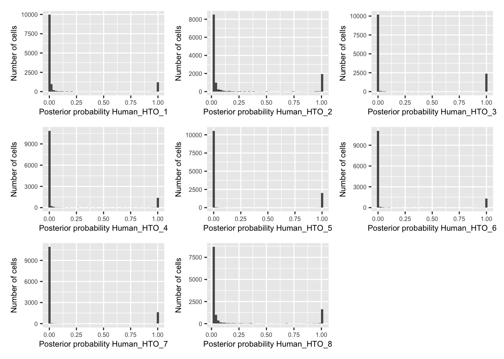

Last updated: 2024-02-21
Checks: 6 1
Knit directory: paed-inflammation-CITEseq/
This reproducible R Markdown analysis was created with workflowr (version 1.7.1). The Checks tab describes the reproducibility checks that were applied when the results were created. The Past versions tab lists the development history.
The R Markdown is untracked by Git. To know which version of the R
Markdown file created these results, you’ll want to first commit it to
the Git repo. If you’re still working on the analysis, you can ignore
this warning. When you’re finished, you can run
wflow_publish to commit the R Markdown file and build the
HTML.
Great job! The global environment was empty. Objects defined in the global environment can affect the analysis in your R Markdown file in unknown ways. For reproduciblity it’s best to always run the code in an empty environment.
The command set.seed(20240216) was run prior to running
the code in the R Markdown file. Setting a seed ensures that any results
that rely on randomness, e.g. subsampling or permutations, are
reproducible.
Great job! Recording the operating system, R version, and package versions is critical for reproducibility.
Nice! There were no cached chunks for this analysis, so you can be confident that you successfully produced the results during this run.
Great job! Using relative paths to the files within your workflowr project makes it easier to run your code on other machines.
Great! You are using Git for version control. Tracking code development and connecting the code version to the results is critical for reproducibility.
The results in this page were generated with repository version e719a2c. See the Past versions tab to see a history of the changes made to the R Markdown and HTML files.
Note that you need to be careful to ensure that all relevant files for
the analysis have been committed to Git prior to generating the results
(you can use wflow_publish or
wflow_git_commit). workflowr only checks the R Markdown
file, but you know if there are other scripts or data files that it
depends on. Below is the status of the Git repository when the results
were generated:
Ignored files:
Ignored: .Rhistory
Ignored: .Rproj.user/
Untracked files:
Untracked: .DS_Store
Untracked: analysis/01.0_remove_empty_droplets_batch0.Rmd
Untracked: analysis/01.1_remove_empty_droplets_demultiplex_batch1.Rmd
Untracked: analysis/01.2_remove_empty_droplets_demultiplex_batch2.Rmd
Untracked: analysis/01.3_remove_empty_droplets_demultiplex_batch3.Rmd
Untracked: analysis/01.4_remove_empty_droplets_demultiplex_batch4.Rmd
Untracked: analysis/01.5_remove_empty_droplets_demultiplex_batch5.Rmd
Untracked: analysis/01.6_remove_empty_droplets_demultiplex_batch6.Rmd
Untracked: analysis/03.0_quality_control.Rmd
Untracked: analysis/04.0_flag_doublets.Rmd
Untracked: code/dropletutils.R
Untracked: data/.DS_Store
Untracked: data/C133_Neeland_batch0/
Untracked: data/C133_Neeland_batch1/
Untracked: data/C133_Neeland_batch2/
Untracked: data/C133_Neeland_batch3/
Untracked: data/C133_Neeland_batch4/
Untracked: data/C133_Neeland_batch5/
Untracked: data/C133_Neeland_batch6/
Untracked: renv.lock
Untracked: renv/
Unstaged changes:
Modified: .Rprofile
Modified: .gitignore
Note that any generated files, e.g. HTML, png, CSS, etc., are not included in this status report because it is ok for generated content to have uncommitted changes.
There are no past versions. Publish this analysis with
wflow_publish() to start tracking its development.
suppressPackageStartupMessages({
library(here)
library(readxl)
library(BiocStyle)
library(ggplot2)
library(cowplot)
library(patchwork)
library(demuxmix)
library(tidyverse)
library(SingleCellExperiment)
library(DropletUtils)
library(scater)
})We used simple HTO labelling whereby each sample is labelled with 1 HTO, shown in the table below:
sample_metadata_df <- read_excel(
here("data/C133_Neeland_batch1/data/sample_sheets/CITEseq_48 samples_design_2.xlsx"),
col_types =
c("text", "text", "text", "numeric", "text", "numeric", "text", "date"))
sample_metadata_df$`HASHTAG ID` <- paste0(
"Human_HTO_",
sample_metadata_df$`HASHTAG ID`)
knitr::kable(sample_metadata_df[sample_metadata_df$Batch == 1, ])| Donor | Sample name | Disease | Age | Sex | Batch | HASHTAG ID | DATE OF CAPTURE |
|---|---|---|---|---|---|---|---|
| 1 | 1 | CF | 6 | F | 1 | Human_HTO_1 | 2021-02-04 |
| 2 | 2 | CF | 6 | F | 1 | Human_HTO_2 | 2021-02-04 |
| 3 | 3 | CF | 5 | F | 1 | Human_HTO_3 | 2021-02-04 |
| 4 | 4 | CF | 6 | F | 1 | Human_HTO_4 | 2021-02-04 |
| 5 | 5 | CF | 6 | F | 1 | Human_HTO_5 | 2021-02-04 |
| 6 | 6 | CF | 5 | M | 1 | Human_HTO_6 | 2021-02-04 |
| 7 | 7 | CF | 5 | M | 1 | Human_HTO_7 | 2021-02-04 |
| 8 | 8 | CF | 6 | M | 1 | Human_HTO_8 | 2021-02-04 |
sce <- readRDS(here("data", "C133_Neeland_batch1",
"data", "SCEs", "C133_Neeland_batch1.CellRanger.SCE.rds"))
sce$Capture <- factor(sce$Sample)
capture_names <- levels(sce$Capture)
capture_names <- setNames(capture_names, capture_names)
sce$Sample <- NULL
sceclass: SingleCellExperiment
dim: 36601 6600194
metadata(1): Samples
assays(1): counts
rownames(36601): ENSG00000243485 ENSG00000237613 ... ENSG00000278817
ENSG00000277196
rowData names(3): ID Symbol Type
colnames(6600194): 1_AAACCCAAGAAACCCA-1 1_AAACCCAAGAAACCCG-1 ...
2_TTTGTTGTCTTTGCTA-1 2_TTTGTTGTCTTTGGAG-1
colData names(2): Barcode Capture
reducedDimNames(0):
mainExpName: Gene Expression
altExpNames(1): Antibody Capturepar(mfrow = c(1, 2))
lapply(capture_names, function(cn) {
sce <- sce[, sce$Capture == cn]
bcrank <- barcodeRanks(counts(sce))
# Only showing unique points for plotting speed.
uniq <- !duplicated(bcrank$rank)
plot(
x = bcrank$rank[uniq],
y = bcrank$total[uniq],
log = "xy",
xlab = "Rank",
ylab = "Total UMI count",
main = cn,
cex.lab = 1.2,
xlim = c(1, 500000),
ylim = c(1, 200000))
abline(h = metadata(bcrank)$inflection, col = "darkgreen", lty = 2)
abline(h = metadata(bcrank)$knee, col = "dodgerblue", lty = 2)
})Total UMI count for each barcode in the dataset, plotted against its rank (in decreasing order of total counts). The inferred locations of the inflection (dark green dashed lines) and knee points (blue dashed lines) are also shown.
Remove empty droplets.
empties <- do.call(rbind, lapply(capture_names, function(cn) {
message(cn)
empties <- readRDS(
here("data",
"C133_Neeland_batch1",
"data",
"emptyDrops", paste0(cn, ".emptyDrops.rds")))
empties$Capture <- cn
empties
}))
tapply(
empties$FDR,
empties$Capture,
function(x) sum(x <= 0.001, na.rm = TRUE)) |>
knitr::kable(
caption = "Number of non-empty droplets identified using `emptyDrops()` from **DropletUtils**.")| x | |
|---|---|
| C133_batch1_1 | 11900 |
| C133_batch1_2 | 12923 |
sce_empties <- sce[, -which(empties$FDR <= 0.001)]
sce <- sce[, which(empties$FDR <= 0.001)]
sceclass: SingleCellExperiment
dim: 36601 24823
metadata(1): Samples
assays(1): counts
rownames(36601): ENSG00000243485 ENSG00000237613 ... ENSG00000278817
ENSG00000277196
rowData names(3): ID Symbol Type
colnames(24823): 1_AAACCCACACTTCCTG-1 1_AAACCCACAGACAAAT-1 ...
2_TTTGTTGTCATTGGTG-1 2_TTTGTTGTCGATGGAG-1
colData names(2): Barcode Capture
reducedDimNames(0):
mainExpName: Gene Expression
altExpNames(1): Antibody Capturesce <- scuttle::addPerCellQC(sce)
head(colData(sce)) %>%
data.frame %>%
knitr::kable()| Barcode | Capture | sum | detected | altexps_Antibody.Capture_sum | altexps_Antibody.Capture_detected | altexps_Antibody.Capture_percent | total | |
|---|---|---|---|---|---|---|---|---|
| 1_AAACCCACACTTCCTG-1 | AAACCCACACTTCCTG-1 | C133_batch1_1 | 25500 | 4750 | 1410 | 113 | 5.239688 | 26910 |
| 1_AAACCCACAGACAAAT-1 | AAACCCACAGACAAAT-1 | C133_batch1_1 | 31507 | 4604 | 1103 | 109 | 3.382398 | 32610 |
| 1_AAACCCACAGGACGAT-1 | AAACCCACAGGACGAT-1 | C133_batch1_1 | 24109 | 4620 | 1352 | 118 | 5.310082 | 25461 |
| 1_AAACCCACATCCTAAG-1 | AAACCCACATCCTAAG-1 | C133_batch1_1 | 24570 | 4672 | 1152 | 125 | 4.478656 | 25722 |
| 1_AAACCCAGTAACATCC-1 | AAACCCAGTAACATCC-1 | C133_batch1_1 | 17761 | 4216 | 1956 | 122 | 9.920373 | 19717 |
| 1_AAACCCAGTACAGTTC-1 | AAACCCAGTACAGTTC-1 | C133_batch1_1 | 32424 | 4139 | 2284 | 125 | 6.580615 | 34708 |
is_adt <- grepl("^A[0-9]+", rownames(altExp(sce, "Antibody Capture")))
is_hto <- grepl("^Human_HTO", rownames(altExp(sce, "Antibody Capture")))
altExp(sce, "HTO") <- altExp(sce, "Antibody Capture")[is_hto, ]
altExp(sce, "ADT") <- altExp(sce, "Antibody Capture")[is_adt, ]
altExp(sce, "Antibody Capture") <- NULL
hto_counts <- counts(altExp(sce, "HTO"))
xmax <- ceiling(max(log2(hto_counts + 1)))par(mfrow = c(3, 3))
lapply(rownames(hto_counts), function(i) {
hist(
log2(hto_counts[i, sce$Capture == "C133_batch1_1"] + 1),
xlab = "log2(UMIs + 1)",
main = paste0("C133_1: ", i),
xlim = c(0, xmax),
breaks = seq(0, xmax, 0.5),
cex.main = 0.8)
})Number of UMIs for each HTO across all non-empty droplets.
Prepare the data.
hto <- as.matrix(counts(altExp(sce[, sce$Capture == "C133_batch1_1"], "HTO")))
detected <- sce$detected[sce$Capture == "C133_batch1_1"]
df <- data.frame(t(hto),
detected = detected,
hto = colSums(hto))
df %>%
pivot_longer(cols = starts_with("Human_HTO")) %>%
mutate(logged = log(value + 1)) %>%
ggplot(aes(x = logged)) +
geom_density(adjust = 5) +
facet_wrap(~name, scales = "free")
df %>%
pivot_longer(cols = starts_with("Human_HTO")) %>%
ggplot(aes(x = detected, y = hto)) +
geom_density_2d() +
facet_wrap(~name) 
Run demultiplexing.
dmm <- demuxmix(hto = hto,
rna = detected,
model = "naive")
summary(dmm) Class NumObs RelFreq MedProb ExpFPs FDR
1 Human_HTO_1 788 0.06672877 0.9690497 43.68846 0.05544221
2 Human_HTO_2 1343 0.11372682 0.9809911 65.15727 0.04851621
3 Human_HTO_3 1581 0.13388094 0.9663791 86.58712 0.05476731
4 Human_HTO_4 945 0.08002371 0.9651959 59.92080 0.06340825
5 Human_HTO_5 1318 0.11160979 0.9641228 78.04980 0.05921836
6 Human_HTO_6 997 0.08442713 0.9658428 56.52317 0.05669325
7 Human_HTO_7 1125 0.09526632 0.9640846 67.78690 0.06025502
8 Human_HTO_8 1174 0.09941570 0.9763559 59.08626 0.05032901
9 singlet 9271 0.78507918 0.9674471 516.79977 0.05574369
10 multiplet 1964 0.16631383 0.9322457 279.58552 0.14235515
11 negative 574 0.04860699 0.9347520 73.21263 0.12754813
12 uncertain 91 NA NA NA NAExamine results.
p <- vector("list", nrow(hto))
for(i in 1:nrow(hto)){
p[[i]] <- plotDmmHistogram(dmm, hto = i) +
coord_cartesian(ylim = c(0, 0.001),
xlim = c(-50, 1000)) +
theme(axis.title = element_text(size = 8),
axis.text = element_text(size = 6))
}
wrap_plots(p , ncol = 3) 
p <- vector("list", nrow(hto))
for(i in 1:nrow(hto)){
p[[i]] <- plotDmmPosteriorP(dmm, hto = i) +
theme(axis.title = element_text(size = 8),
axis.text = element_text(size = 6))
}
wrap_plots(p , ncol = 3) 
pAcpt(dmm) <- 0
classes1 <- dmmClassify(dmm)
classes1$dmmHTO <- ifelse(classes1$Type == "multiplet", "Doublet",
ifelse(classes1$Type %in% c("negative", "uncertain"),
"Negative", classes1$HTO))
table(classes1$dmmHTO)
Doublet Human_HTO_1 Human_HTO_2 Human_HTO_3 Human_HTO_4 Human_HTO_5
2037 789 1347 1582 947 1319
Human_HTO_6 Human_HTO_7 Human_HTO_8 Negative
998 1126 1175 580 par(mfrow = c(3, 3))
lapply(rownames(hto_counts), function(i) {
hist(
log2(hto_counts[i, sce$Capture == "C133_batch1_2"] + 1),
xlab = "log2(UMIs + 1)",
main = paste0("C133_2: ", i),
xlim = c(0, xmax),
breaks = seq(0, xmax, 0.5),
cex.main = 0.8)
})Number of UMIs for each HTO across all non-empty droplets.
Prepare the data.
hto <- as.matrix(counts(altExp(sce[, sce$Capture == "C133_batch1_2"], "HTO")))
detected <- sce$detected[sce$Capture == "C133_batch1_2"]
df <- data.frame(t(hto),
detected = detected,
hto = colSums(hto))
df %>%
pivot_longer(cols = starts_with("Human_HTO")) %>%
mutate(logged = log(value + 1)) %>%
ggplot(aes(x = logged)) +
geom_density(adjust = 5) +
facet_wrap(~name, scales = "free")
df %>%
pivot_longer(cols = starts_with("Human_HTO")) %>%
ggplot(aes(x = detected, y = hto)) +
geom_density_2d() +
facet_wrap(~name) 
Run demultiplexing.
dmm <- demuxmix(hto = hto,
rna = detected,
model = "naive")
summary(dmm) Class NumObs RelFreq MedProb ExpFPs FDR
1 Human_HTO_1 814 0.06340058 0.9636953 46.04119 0.05656166
2 Human_HTO_2 1383 0.10771867 0.9762956 73.37210 0.05305286
3 Human_HTO_3 1645 0.12812524 0.9611734 101.33687 0.06160296
4 Human_HTO_4 941 0.07329231 0.9592414 68.18893 0.07246433
5 Human_HTO_5 1455 0.11332658 0.9601077 93.67750 0.06438316
6 Human_HTO_6 966 0.07523950 0.9605405 61.36488 0.06352472
7 Human_HTO_7 1154 0.08988239 0.9588789 78.26995 0.06782491
8 Human_HTO_8 1175 0.09151803 0.9737753 65.52515 0.05576609
9 singlet 9533 0.74250331 0.9622643 587.77658 0.06165704
10 multiplet 2340 0.18225719 0.9216325 340.64483 0.14557471
11 negative 966 0.07523950 0.9141909 142.04041 0.14703976
12 uncertain 84 NA NA NA NAExamine results.
p <- vector("list", nrow(hto))
for(i in 1:nrow(hto)){
p[[i]] <- plotDmmHistogram(dmm, hto = i) +
coord_cartesian(ylim = c(0, 0.001),
xlim = c(-50, 1000)) +
theme(axis.title = element_text(size = 8),
axis.text = element_text(size = 6))
}
wrap_plots(p , ncol = 3) 
p <- vector("list", nrow(hto))
for(i in 1:nrow(hto)){
p[[i]] <- plotDmmPosteriorP(dmm, hto = i) +
theme(axis.title = element_text(size = 8),
axis.text = element_text(size = 6))
}
wrap_plots(p , ncol = 3) 
pAcpt(dmm) <- 0
classes2 <- dmmClassify(dmm)
classes2$dmmHTO <- ifelse(classes2$Type == "multiplet", "Doublet",
ifelse(classes2$Type %in% c("negative", "uncertain"),
"Negative", classes2$HTO))
table(classes2$dmmHTO)
Doublet Human_HTO_1 Human_HTO_2 Human_HTO_3 Human_HTO_4 Human_HTO_5
2412 814 1384 1646 941 1456
Human_HTO_6 Human_HTO_7 Human_HTO_8 Negative
967 1154 1177 972 classes <- rbind(classes1, classes2)
all(rownames(classes) == colnames(sce))[1] TRUEsce$dmmHTO <- factor(classes$dmmHTO,
levels = c(sort(unique(grep("Human",
classes$dmmHTO,
value = TRUE))),
"Doublet",
"Negative"))library(vcfR)
f <- sapply(capture_names, function(cn) {
here("data",
"C133_Neeland_batch1",
"data",
"vireo", cn, "GT_donors.vireo.vcf.gz")
})
x <- lapply(f, read.vcfR, verbose = FALSE)
# Create unique ID for each locus in each capture.
y <- lapply(x, function(xx) {
paste(
xx@fix[,"CHROM"],
xx@fix[,"POS"],
xx@fix[,"REF"],
xx@fix[,"ALT"],
sep = "_")
})
# Only keep the loci in common between the 2 captures.
i <- lapply(y, function(yy) {
na.omit(match(Reduce(intersect, y), yy))
})
# Construct genotype matrix at common loci from the 2 captures.
donor_names <- paste0("donor", 0:7)
g <- mapply(
function(xx, ii) {
apply(
xx@gt[ii, donor_names],
2,
function(x) sapply(strsplit(x, ":"), `[[`, 1))
},
xx = x,
ii = i,
SIMPLIFY = FALSE)
# Count number of genotype matches between pairs of donors (one from each
# capture) and convert to a proportion.
z <- lapply(2:length(capture_names), function(k) {
zz <- matrix(
NA_real_,
nrow = length(donor_names),
ncol = length(donor_names),
dimnames = list(donor_names, donor_names))
for (ii in rownames(zz)) {
for (jj in colnames(zz)) {
zz[ii, jj] <- sum(g[[1]][, ii] == g[[k]][, jj]) / nrow(g[[1]])
}
}
zz
})heatmaps <- lapply(seq_along(z), function(k) {
pheatmap::pheatmap(
z[[k]],
color = viridisLite::inferno(101),
cluster_rows = FALSE,
cluster_cols = FALSE,
main = "Proportion of matching genotypes",
display_numbers = TRUE,
number_color = "grey50",
labels_row = paste0("C133_batch1_1: ", rownames(z[[k]])),
labels_col = paste0("C133_batch1_", k + 1, ": ", colnames(z[[k]])),
silent = TRUE,
fontsize = 10)
})
gridExtra::grid.arrange(grobs = lapply(heatmaps, `[[`, "gtable"), ncol = 1)Proportion of matching genotypes between pairs of captures.
The table below gives the best matches between the captures.
best_match_df <- data.frame(
c(
list(rownames(z[[1]])),
lapply(seq_along(z), function(k) {
apply(
z[[k]],
1,
function(x) colnames(z[[k]])[which.max(x)])
})),
row.names = NULL)
colnames(best_match_df) <- capture_names
best_match_df$GeneticDonor <- LETTERS[seq_along(donor_names)]
best_match_df <- dplyr::select(best_match_df, GeneticDonor, everything())
knitr::kable(
best_match_df,
caption = "Best match of donors between the scRNA-seq captures.")| GeneticDonor | C133_batch1_1 | C133_batch1_2 |
|---|---|---|
| A | donor0 | donor5 |
| B | donor1 | donor1 |
| C | donor2 | donor0 |
| D | donor3 | donor7 |
| E | donor4 | donor6 |
| F | donor5 | donor4 |
| G | donor6 | donor3 |
| H | donor7 | donor2 |
vireo_df <- do.call(
rbind,
c(
lapply(capture_names, function(cn) {
# Read data
vireo_df <- read.table(
here("data",
"C133_Neeland_batch1",
"data",
"vireo", cn, "donor_ids.tsv"),
header = TRUE)
# Replace `donor[0-9]+` with `donor_[A-Z]` using `best_match_df`.
best_match <- setNames(
c(best_match_df[["GeneticDonor"]], "Doublet", "Unknown"),
c(best_match_df[[cn]], "doublet", "unassigned"))
vireo_df$GeneticDonor <- factor(
best_match[vireo_df$donor_id],
levels = c(best_match_df[["GeneticDonor"]], "Doublet", "Unknown"))
vireo_df$donor_id <- NULL
vireo_df$best_singlet <- best_match[vireo_df$best_singlet]
vireo_df$best_doublet <- sapply(
strsplit(vireo_df$best_doublet, ","),
function(x) {
paste0(best_match[x[[1]]], ",", best_match[x[[2]]])
})
# Add additional useful metadata
vireo_df$Confident <- factor(
vireo_df$GeneticDonor == vireo_df$best_singlet,
levels = c(TRUE, FALSE))
vireo_df$Capture <- cn
# Reorder so matches SCE.
captureNumber <- sub("C133_batch1_", "", cn)
vireo_df$colname <- paste0(captureNumber, "_", vireo_df$cell)
j <- match(colnames(sce)[sce$Capture == cn], vireo_df$colname)
stopifnot(!anyNA(j))
vireo_df <- vireo_df[j, ]
vireo_df
}),
list(make.row.names = FALSE)))We add the parsed outputs of vireo to the colData of the SingleCellExperiment object so that we can incorporate it into downstream analyses.
stopifnot(identical(colnames(sce), vireo_df$colname))
sce$GeneticDonor <- vireo_df$GeneticDonor
# NOTE: We exclude redundant columns.
sce$vireo <- DataFrame(
vireo_df[, setdiff(
colnames(vireo_df),
c("cell", "colname", "Capture", "GeneticDonor"))])tmp_df <- data.frame(
best_singlet = sce$vireo$best_singlet,
Confident = sce$vireo$Confident,
Capture = sce$Capture)
p1 <- ggplot(tmp_df) +
geom_bar(
aes(x = best_singlet, fill = Confident),
position = position_stack(reverse = TRUE)) +
coord_flip() +
ylab("Number of droplets") +
xlab("Best singlet") +
theme_cowplot(font_size = 7)
p2 <- ggplot(tmp_df) +
geom_bar(
aes(x = best_singlet, fill = Confident),
position = position_fill(reverse = TRUE)) +
coord_flip() +
ylab("Proportion of droplets") +
xlab("Best singlet") +
theme_cowplot(font_size = 7)
(p1 + p1 + facet_grid(~Capture) + plot_layout(widths = c(1, 2))) /
(p2 + p2 + facet_grid(~Capture) + plot_layout(widths = c(1, 2))) +
plot_layout(guides = "collect")Number (top) and proportion (bottom) of droplets assigned to each donor based on genetics (best singlet), and if these were confidently or not confidently assigned, overall (left) and within each capture (right).
p3 <- ggplot(
data.frame(
GeneticDonor = sce$GeneticDonor,
Confident = sce$vireo$Confident,
Capture = sce$Capture)) +
geom_bar(
aes(x = GeneticDonor, fill = Confident),
position = position_stack(reverse = TRUE)) +
coord_flip() +
ylab("Number of droplets") +
xlab("Final donor assignment") +
theme_cowplot(font_size = 7)
(p3 + p3 + facet_grid(~Capture) + plot_layout(widths = c(1, 2))) +
plot_layout(guides = "collect")Number and proportion of droplets assigned to each donor based on genetics (final assignment), and if these were confidently or not confidently assigned, overall (left) and within each capture (right).
p <- scater::plotColData(
sce,
"dmmHTO",
"GeneticDonor",
colour_by = "GeneticDonor",
other_fields = "Capture") +
scale_x_discrete(guide = guide_axis(n.dodge = 2)) +
guides(colour = "none")
p / (p + facet_grid(~Capture))
Number of droplets assigned to each
dmmHTO/GeneticDonor combination, overall (top)
and within each capture (bottom)
janitor::tabyl(
as.data.frame(colData(sce)[, c("dmmHTO", "GeneticDonor")]),
dmmHTO,
GeneticDonor) |>
janitor::adorn_title(placement = "combined") |>
janitor::adorn_totals("both") |>
knitr::kable(
caption = "Number of droplets assigned to each `dmmHTO`/`GeneticDonor` combination.")| dmmHTO/GeneticDonor | A | B | C | D | E | F | G | H | Doublet | Unknown | Total |
|---|---|---|---|---|---|---|---|---|---|---|---|
| Human_HTO_1 | 2 | 1548 | 1 | 7 | 0 | 1 | 1 | 1 | 8 | 34 | 1603 |
| Human_HTO_2 | 2 | 2 | 1 | 2628 | 2 | 0 | 2 | 4 | 24 | 66 | 2731 |
| Human_HTO_3 | 3195 | 2 | 0 | 0 | 0 | 0 | 0 | 1 | 13 | 17 | 3228 |
| Human_HTO_4 | 2 | 0 | 1865 | 1 | 0 | 0 | 0 | 1 | 8 | 11 | 1888 |
| Human_HTO_5 | 0 | 0 | 0 | 0 | 0 | 1 | 2748 | 1 | 12 | 13 | 2775 |
| Human_HTO_6 | 2 | 1 | 1 | 0 | 0 | 1929 | 1 | 1 | 12 | 18 | 1965 |
| Human_HTO_7 | 1 | 0 | 1 | 1 | 0 | 1 | 0 | 2250 | 10 | 16 | 2280 |
| Human_HTO_8 | 2 | 0 | 3 | 1 | 2183 | 1 | 2 | 1 | 21 | 138 | 2352 |
| Doublet | 451 | 201 | 321 | 362 | 238 | 253 | 448 | 349 | 1765 | 61 | 4449 |
| Negative | 141 | 79 | 198 | 57 | 84 | 94 | 65 | 109 | 168 | 557 | 1552 |
| Total | 3798 | 1833 | 2391 | 3057 | 2507 | 2280 | 3267 | 2718 | 2041 | 931 | 24823 |
saveRDS(
sce,
here("data",
"C133_Neeland_batch1",
"data",
"SCEs",
"C133_Neeland_batch1.demuxmix.SCE.rds"))
sessionInfo()R version 4.3.2 (2023-10-31)
Platform: aarch64-apple-darwin20 (64-bit)
Running under: macOS Sonoma 14.3
Matrix products: default
BLAS: /Library/Frameworks/R.framework/Versions/4.3-arm64/Resources/lib/libRblas.0.dylib
LAPACK: /Library/Frameworks/R.framework/Versions/4.3-arm64/Resources/lib/libRlapack.dylib; LAPACK version 3.11.0
locale:
[1] en_US.UTF-8/en_US.UTF-8/en_US.UTF-8/C/en_US.UTF-8/en_US.UTF-8
time zone: Australia/Melbourne
tzcode source: internal
attached base packages:
[1] stats4 stats graphics grDevices datasets utils methods
[8] base
other attached packages:
[1] vcfR_1.15.0 scater_1.30.1
[3] scuttle_1.12.0 DropletUtils_1.22.0
[5] SingleCellExperiment_1.24.0 SummarizedExperiment_1.32.0
[7] Biobase_2.62.0 GenomicRanges_1.54.1
[9] GenomeInfoDb_1.38.6 IRanges_2.36.0
[11] S4Vectors_0.40.2 BiocGenerics_0.48.1
[13] MatrixGenerics_1.14.0 matrixStats_1.2.0
[15] lubridate_1.9.3 forcats_1.0.0
[17] stringr_1.5.1 dplyr_1.1.4
[19] purrr_1.0.2 readr_2.1.5
[21] tidyr_1.3.1 tibble_3.2.1
[23] tidyverse_2.0.0 demuxmix_1.4.0
[25] patchwork_1.2.0 cowplot_1.1.3
[27] ggplot2_3.4.4 BiocStyle_2.30.0
[29] readxl_1.4.3 here_1.0.1
[31] workflowr_1.7.1
loaded via a namespace (and not attached):
[1] RColorBrewer_1.1-3 rstudioapi_0.15.0
[3] jsonlite_1.8.8 magrittr_2.0.3
[5] ggbeeswarm_0.7.2 farver_2.1.1
[7] rmarkdown_2.25 fs_1.6.3
[9] zlibbioc_1.48.0 vctrs_0.6.5
[11] DelayedMatrixStats_1.24.0 RCurl_1.98-1.14
[13] janitor_2.2.0 htmltools_0.5.7
[15] S4Arrays_1.2.0 BiocNeighbors_1.20.2
[17] cellranger_1.1.0 Rhdf5lib_1.24.2
[19] SparseArray_1.2.4 rhdf5_2.46.1
[21] sass_0.4.8 bslib_0.6.1
[23] cachem_1.0.8 whisker_0.4.1
[25] lifecycle_1.0.4 pkgconfig_2.0.3
[27] rsvd_1.0.5 Matrix_1.6-5
[29] R6_2.5.1 fastmap_1.1.1
[31] snakecase_0.11.1 GenomeInfoDbData_1.2.11
[33] digest_0.6.34 colorspace_2.1-0
[35] ps_1.7.6 rprojroot_2.0.4
[37] dqrng_0.3.2 irlba_2.3.5.1
[39] vegan_2.6-4 beachmat_2.18.1
[41] labeling_0.4.3 fansi_1.0.6
[43] timechange_0.3.0 mgcv_1.9-1
[45] httr_1.4.7 abind_1.4-5
[47] compiler_4.3.2 withr_3.0.0
[49] BiocParallel_1.36.0 viridis_0.6.5
[51] highr_0.10 HDF5Array_1.30.0
[53] R.utils_2.12.3 MASS_7.3-60.0.1
[55] DelayedArray_0.28.0 permute_0.9-7
[57] tools_4.3.2 vipor_0.4.7
[59] ape_5.7-1 beeswarm_0.4.0
[61] httpuv_1.6.14 R.oo_1.26.0
[63] glue_1.7.0 callr_3.7.3
[65] nlme_3.1-164 rhdf5filters_1.14.1
[67] promises_1.2.1 grid_4.3.2
[69] getPass_0.2-4 cluster_2.1.6
[71] memuse_4.2-3 generics_0.1.3
[73] isoband_0.2.7 gtable_0.3.4
[75] tzdb_0.4.0 R.methodsS3_1.8.2
[77] pinfsc50_1.3.0 hms_1.1.3
[79] BiocSingular_1.18.0 ScaledMatrix_1.10.0
[81] utf8_1.2.4 XVector_0.42.0
[83] ggrepel_0.9.5 pillar_1.9.0
[85] limma_3.58.1 later_1.3.2
[87] splines_4.3.2 lattice_0.22-5
[89] renv_1.0.3 tidyselect_1.2.0
[91] locfit_1.5-9.8 knitr_1.45
[93] git2r_0.33.0 gridExtra_2.3
[95] edgeR_4.0.15 xfun_0.42
[97] statmod_1.5.0 pheatmap_1.0.12
[99] stringi_1.8.3 yaml_2.3.8
[101] evaluate_0.23 codetools_0.2-19
[103] BiocManager_1.30.22 cli_3.6.2
[105] munsell_0.5.0 processx_3.8.3
[107] jquerylib_0.1.4 Rcpp_1.0.12
[109] parallel_4.3.2 sparseMatrixStats_1.14.0
[111] bitops_1.0-7 viridisLite_0.4.2
[113] scales_1.3.0 crayon_1.5.2
[115] rlang_1.1.3